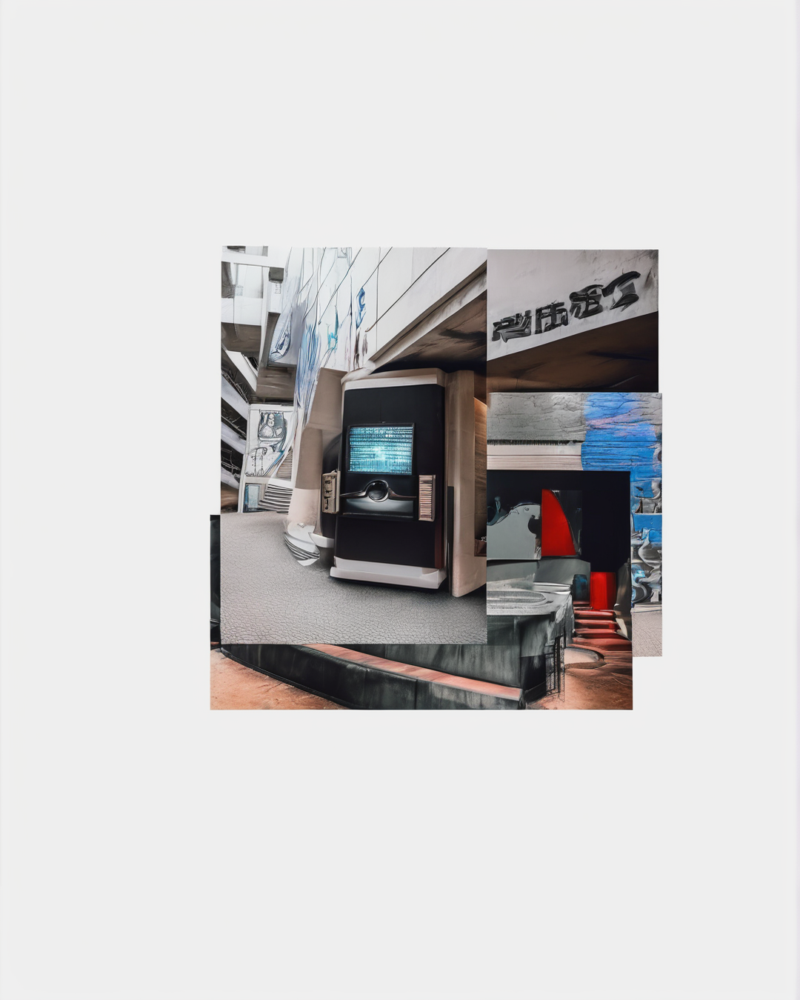
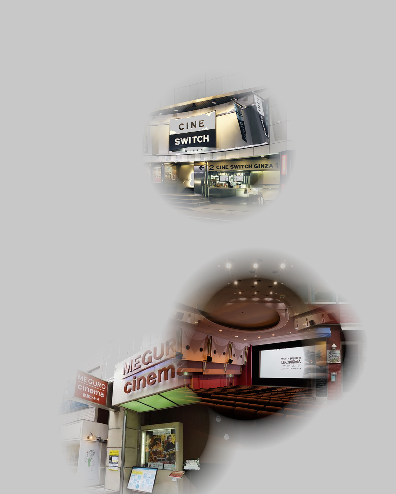
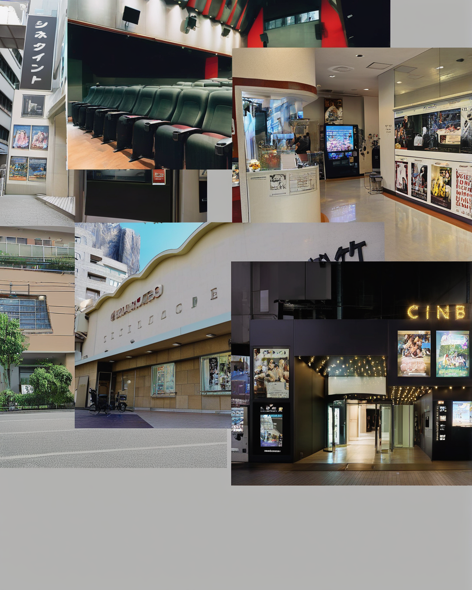
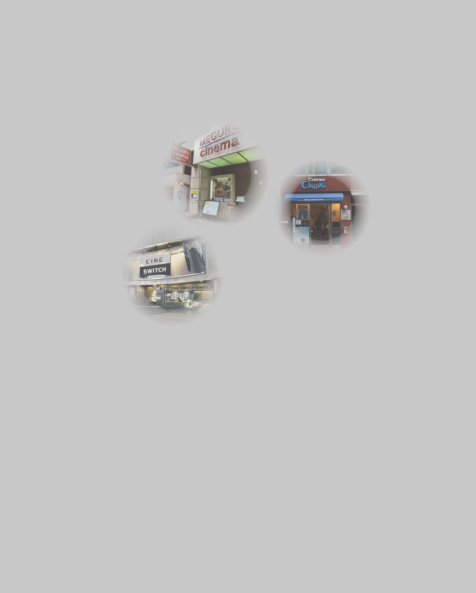

1. img2img
Basic collage reinterpreted by SD with prompt_strength 0.55

2. Gradient Overlap
Cutouts with feathered radial alpha, center-biased overlap

3. Dense Collage
6 large cutouts packed tightly, light SD smoothing (0.35)

4. ControlNet Edges
Edge detection guides new architecture generation

5. Two-Pass
Generate base architecture, overlay cutouts, unify